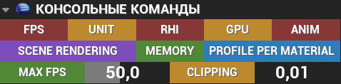
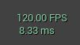
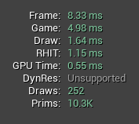
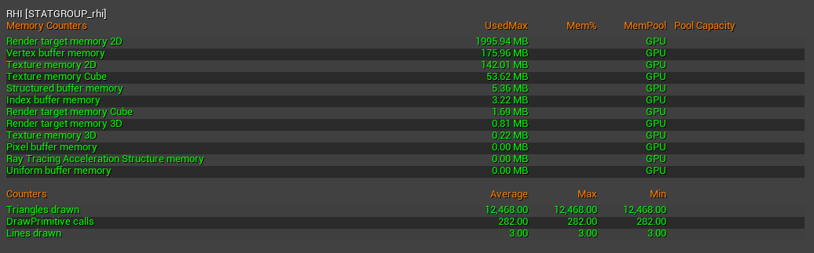
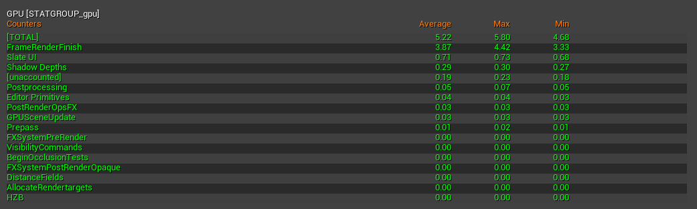
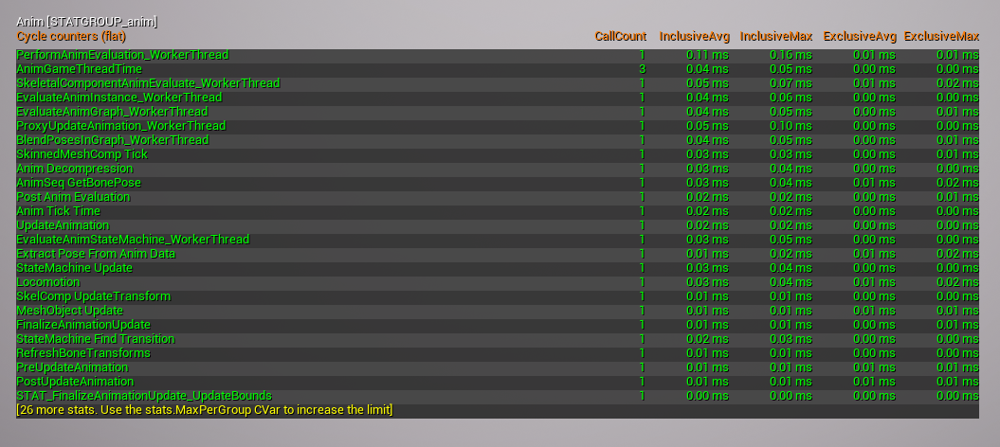
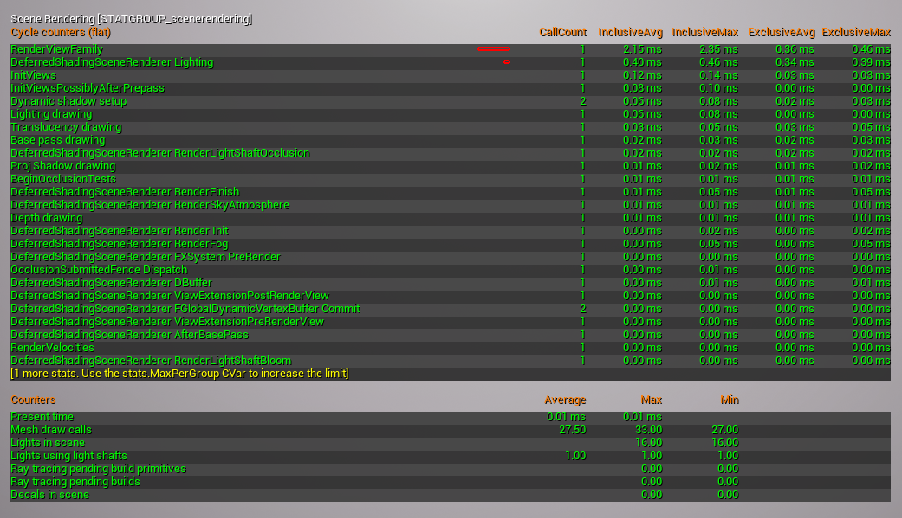
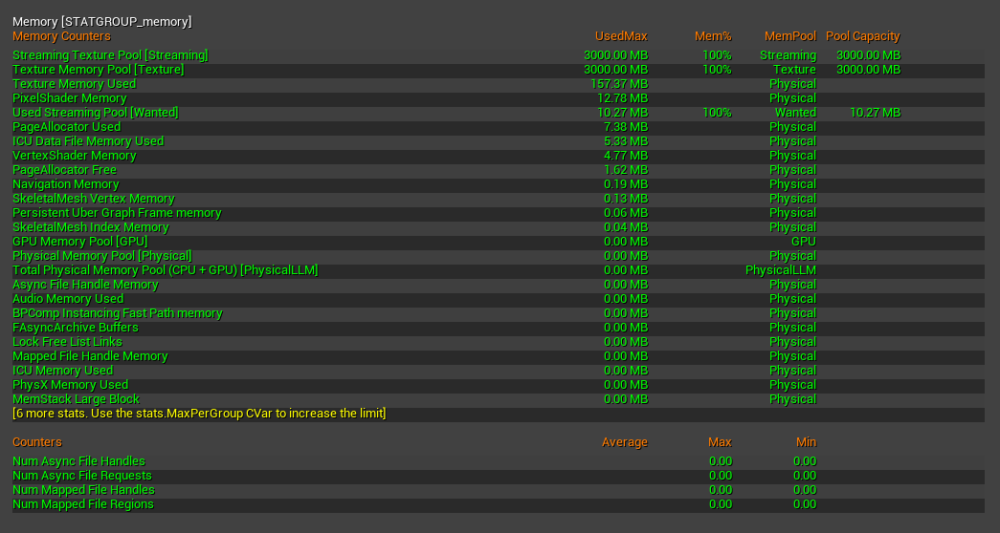
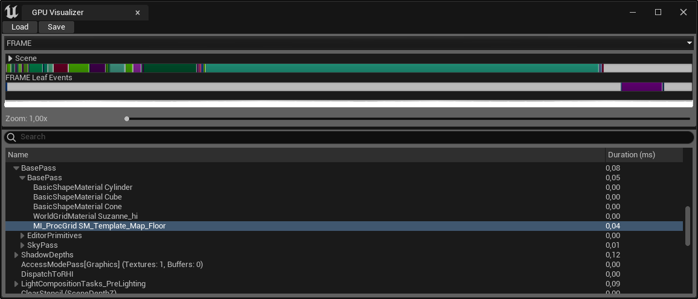

Консольные команды¶
RYM_Utilities
Кнопки для активации консольных команд, преимущественно для оценки оптимизации сцены.

FPS¶
stat fps
Отображает текущее количество кадров, обрабатываемых в секунду, и время, необходимое для обработки кадра, в миллисекундах (мс).

UNIT¶
stat unit
Отображает время, затраченное на текущий кадр на ЦП, время, затраченное на игровой поток, время, затраченное на поток рендеринга, и время, затраченное на текущий кадр на ГП.

Описание значений
Frame - Общее количество времени, затраченное на создание одного кадра игры. Поскольку потоки Game и Draw синхронизируются перед завершением кадра, время кадра часто близко к времени, отображаемому в одном из этих потоков.
Game - Время затрачиваемое на игровой поток. Это работа центрального процессора над логикой (кодом) игры. Когда время кадра очень близко этому значению, это означает, что вы ограничены потоком игры - проседает процессор.
Draw (рендеринг) - Время, затраченное на процесс рендеринга. Это работа центрального процессора по подготовке данных для видеокарты. Когда время кадра очень близко к этому значению, вы ограничены потоком рендеринга - опять же проседает процессор.
GPU - Время затрачиваемое графическим процессором на рендеринг сцены. Поскольку время графического процессора синхронизируется с кадром, оно, скорее всего, будет похоже на время кадра. Если это значение приближается к значению времени кадра, а Game и Draw - нет, то ваше узкое место - видеокарта.
RHIT - Как правило, время потока RHI синхронизируется с кадром и, скорее всего, будет похоже на время кадра.
DynRes - Если функция Dynamic resolution поддерживается (и включена), она показывает процент первичного экрана по проценту вторичного экрана.
Draws - Текущее количество вызовов функции DrawPrimitive.
Prims - Текущее количество рисуемых треугольников.
RHI¶
stat rhi
Отображает память RHI и статистику производительности.

Что такое RHI
Render Hardware Interface (RHI) — это уровень абстракции над несколькими платформенно-специфичными графическими API.
GPU¶
stat gpu
Отображает статистику графического процессора (GPU) для кадра.

ANIM¶
stat anim
Отображает статистику для системы анимации.

SCENE RENDERING¶
stat scenerendering
Показывает общую статистику рендеринга. Это хорошая отправная точка для поиска областей с низкой производительностью в процессе рендеринга.

MEMORY¶
stat memory
Отображает информацию о памяти, используемой различными системами.

PROFILE PER MATERIAL¶
r.RHISetGPUCaptureOptions 1 , profile gpu
Переключает параметр профайлера на отображение времени рендеринга материалов в милисекундах и открывает его.

MAX FPS¶
t.MaxFPS + значение
Устанавливают максимальную кадровую частоту на указанное значение.
CLIPPING¶
r.SetNearClipPlane + значение
Устанавливает минимальное расстояние до камеры при котором начинается рендеринг объектов.